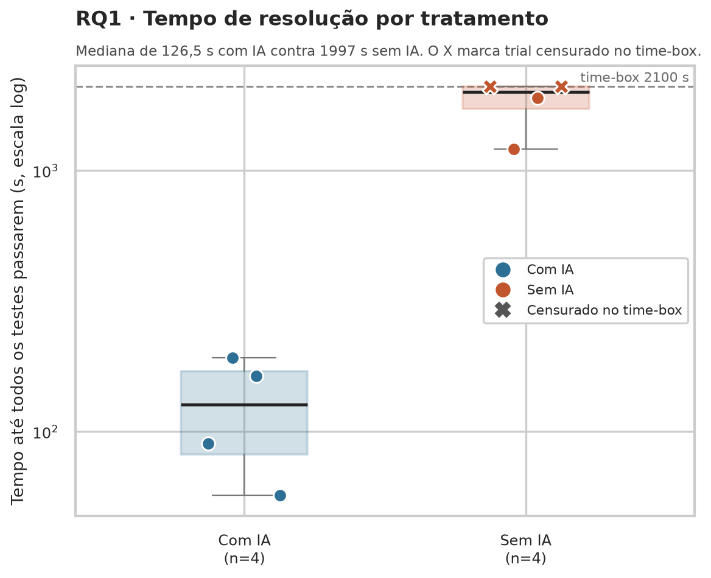
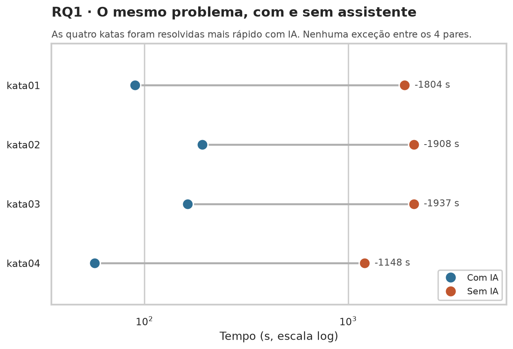
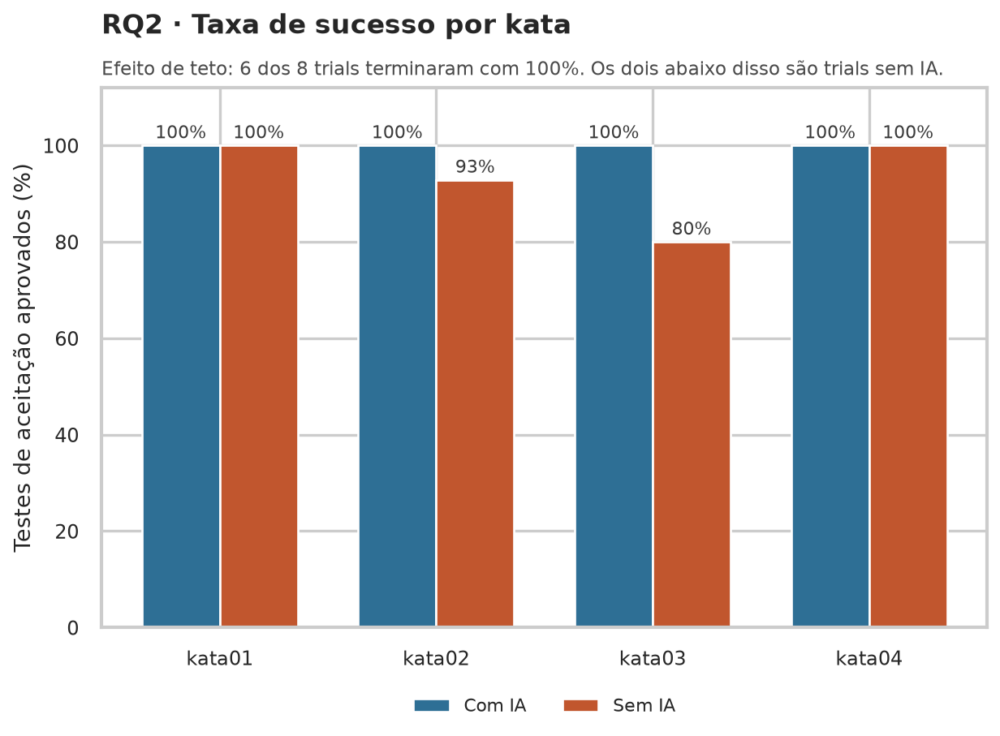
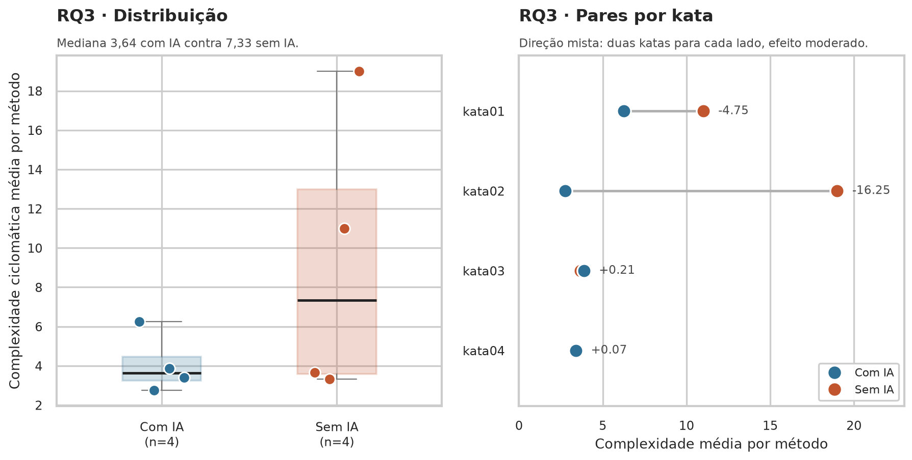
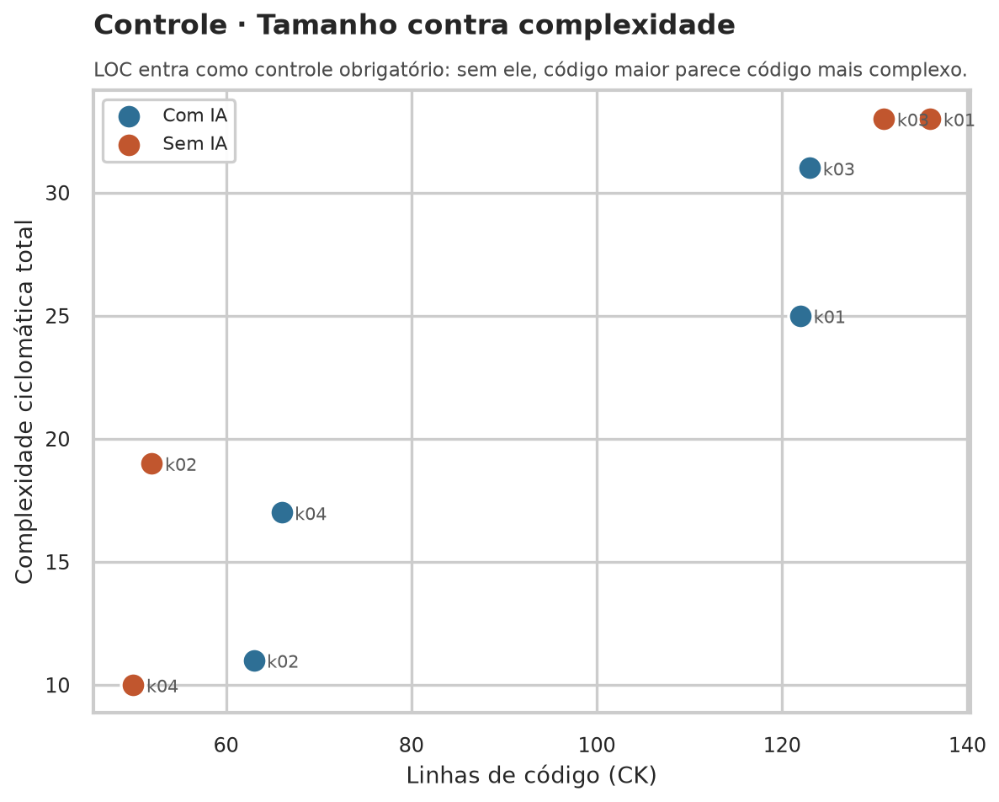
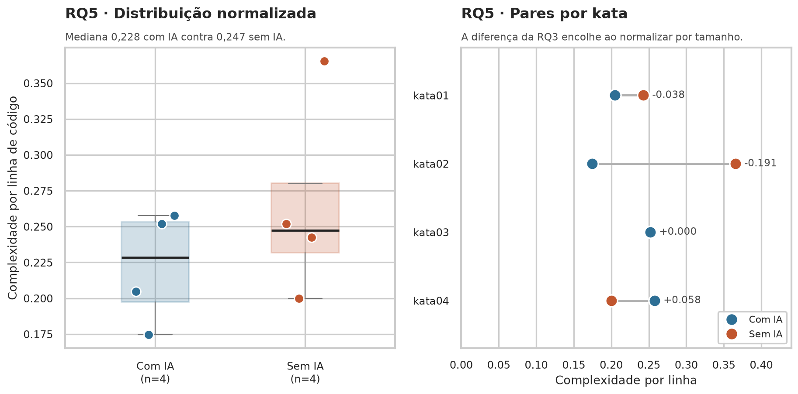
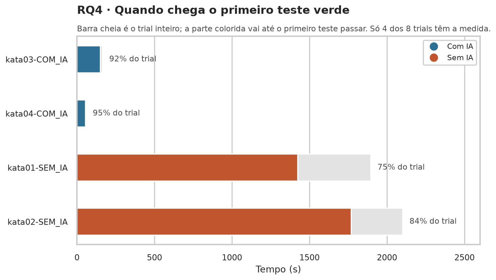
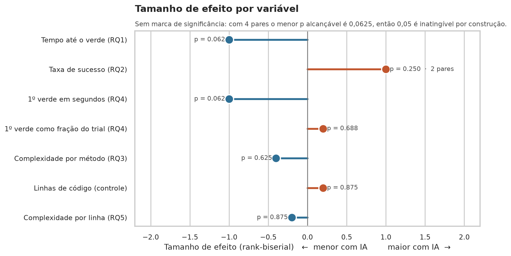

Laboratório de Experimentação de Software · Lab02S03
Assistentes de IA vs. codificação manual
Dashboard do experimento controlado que mede o efeito de um assistente de IA
generativa sobre tempo de resolução, defeitos e estrutura do código.
Gabriel Cardoso e Guilherme Brina Ferreira ·
PUC Minas · Engenharia de Software · 6º período ·
Professor Danilo Maia
4 de 4
katas resolvidas mais rápido com assistente
126,5 s
mediana do tempo com IA
1997 s
mediana do tempo sem IA
8
trials, 4 por tratamento
2
trials censurados no time-box de 35 min
5
prompts no total nos quatro trials com IA
RQ1 · O assistente reduz o tempo de resolução?

Cada caixa resume apenas quatro medidas, por isso os pontos individuais aparecem
por cima. Os dois X são trials censurados: bateram o time-box de 2100
segundos sem concluir a kata, e o valor registrado é o limite, não um tempo de
conclusão. A escala é logarítmica porque os tempos vão de 57 a 2100 segundos.

Este é o desenho do experimento desenhado. Cada linha é a mesma kata
resolvida nos dois tratamentos, o que neutraliza a dificuldade do exercício. As
quatro linhas apontam para o mesmo lado, com reduções de 1148 a 1937 segundos.
O teste de Wilcoxon devolveu W igual a zero, o valor mais extremo possível, e
tamanho de efeito de −1,000, o máximo da escala.
Observação exploratória · quantos prompts custou
Os quatro trials com IA consumiram 1, 2, 1 e 1 prompt, cinco no total. O
enunciado trata essa contagem como métrica opcional, fora de teste de hipótese, e
aqui ela serve para interpretar o tempo.
A resolução assistida não veio de uma conversa longa. Veio de poucas interações,
e o resto do trial foi ler, colar e conferir a resposta contra a suíte de testes.
Isso também ajuda a explicar o achado da RQ4, mais abaixo.
RQ2 · O assistente reduz os defeitos?

Efeito de teto. Sete dos oito trials terminaram com todos os testes
passando, então quase não há variação para medir. Apenas a kata02 sem IA difere,
com 13 de 14 testes. Sobra um único par não empatado, e o teste de Wilcoxon exige
pelo menos dois. A RQ2 fica sem resposta estatística, e isso é um resultado do
experimento, não uma falha de análise.
RQ3 e RQ5 · O assistente altera a estrutura do código?

A mediana cai de 7,33 para 3,64 com assistente, mas os pares contam uma história
menos limpa: duas katas ficaram menos complexas com IA e duas ficaram
ligeiramente mais. A diferença grande vem quase toda da kata02, em que a solução
manual concentrou toda a lógica em um único método.

Linhas de código entram como variável de controle obrigatória. O enunciado
alerta que código gerado por IA tende a ser mais verboso, e sem normalizar por
tamanho um arquivo maior pareceria mais complexo. Aqui os dois tratamentos se
misturam no mesmo espaço, sem separação visível por tamanho.

Esta é a questão própria do grupo. Ao dividir a complexidade pelo tamanho, a
diferença encolhe: mediana de 0,228 com IA contra 0,247 sem IA. Somando com a
figura anterior, a leitura é que a diferença da RQ3 vem mais de como o código
foi dividido em métodos do que de densidade de decisão por linha.
RQ4 · O assistente antecipa o primeiro teste verde?

Segunda questão própria do grupo, e a que mais sofreu com falha de instrumentação:
só quatro dos oito trials têm essa medida. Como nenhuma kata tem os dois
tratamentos medidos, não existe par e o teste não se aplica. O que aparece é
contraintuitivo e vale discussão: com assistente, o primeiro teste verde chega com
92% e 95% do trial já decorrido, enquanto sem assistente chega com 75% e 84%. A
solução assistida chega quase pronta de uma vez, em vez de crescer aos poucos.
Síntese dos testes

Nenhuma marca de significância aparece aqui de propósito. Com quatro pares, o
menor p-valor alcançável no teste de Wilcoxon é 0,0625 unilateral e 0,125
bilateral, então 0,05 é inatingível por construção do desenho, e não por
característica dos dados. A linha tracejada em cinza é a RQ2, cujo efeito foi
calculado sobre um único par útil e não deve ser interpretado.
Variável
Mediana com IA
Mediana sem IA
p-valor
Tamanho de efeito
Tempo até o verde (RQ1)
126,5 s
1997 s
0,0625
−1,000
Taxa de sucesso (RQ2)
100%
100%
não se aplica
1 par útil
Complexidade por método (RQ3)
3,64
7,33
0,625
−0,400
Duplicação de código (RQ3)
0%
0%
sem variação
—
Linhas de código (controle)
94
91,5
0,875
+0,200
Complexidade por linha (RQ5)
0,228
0,247
0,875
−0,200
Como ler estes resultados
Nenhum resultado é significativo a 0,05, e isso estava previsto
O grupo tem dois integrantes e quatro katas, o que dá quatro pares no teste de
Wilcoxon. Nessa configuração o menor p-valor possível é 0,0625. A limitação foi
declarada no desenho do experimento, na Sprint 1, antes de qualquer dado ser
coletado.
A consequência prática é que a leitura se apoia em tamanho de efeito e
consistência de direção. No caso da RQ1, as quatro katas apontaram para o
mesmo lado e o efeito foi o máximo da escala, o que é o resultado mais forte que
este desenho permite produzir.
Duas lacunas de medição
O tempo até o primeiro teste verde não foi registrado em quatro trials, o que
deixou a RQ4 sem par. E um trial censurado não teve a contagem de testes
registrada no instante dos 35 minutos, o que tirou uma observação da RQ2.
As duas lacunas estão documentadas em docs/desvios-sprint2.md, com a
causa e o impacto em cada questão. Nenhum valor foi estimado para preencher o que
não foi medido.